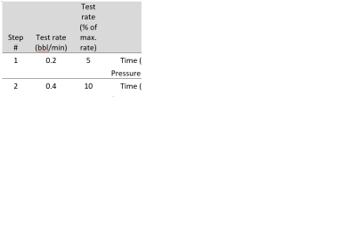
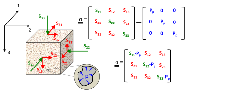
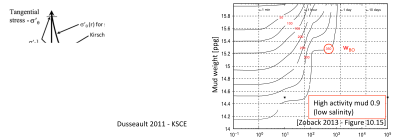

- The following data corresponds to a leak-off test in an offshore well in the Gulf of Mexico (SPE-59123-MS).
- Estimate
 at the shoe depth (TVDSS = 8,050 ft).
at the shoe depth (TVDSS = 8,050 ft).
- Assuming the pore pressure is
 = 4,700 psi, and fracture closure occurs at time 1:18:00 (use downhole pressure reading), calculate effective vertical stress and minimum effective stress .
= 4,700 psi, and fracture closure occurs at time 1:18:00 (use downhole pressure reading), calculate effective vertical stress and minimum effective stress .
- Calculate the effective stress anisotropy ratio
. What is the faulting regime?
- What is the density of the drilling mud?
- Download the file MicrofracData.dat which corresponds to a minifrac field test. The pressure reading corresponds to surface pressure.
- Plot surface pressure and injection rate in a double y-axis plot as a function of time. Plot the entire interval and make a zoom from 70 to 90 min.
- Find the instantaneous shut-in pressure (ISIP) and make a plot of surface pressure as a function of square root of time. Find the fracture closure pressure (FCP) [surface pressure].
- The true depth is 7,503 ft. Assuming a hydrostatic pressure gradient inside the wellbore of 0.44 psi/ft, calculate the minimum total principal stress in this place.
- The figure below shows the results of a DFIT test (data from Zoback [2007]).
- How many barrels of fracturing fluid were used in this test?
- Indicate fracture propagation pressure (FPP), instantaneous shut-in pressure (ISIP) and fracture closure pressure (FCP) (as well as you can without analyzing the data in detail).
- Describe and sketch the flow behavior around the wellbore before and after shut-in.
- At surface pressure of 0 psi the bottom-hole pressure is 5,500 psi. What is the minimum principal stress in this formation?
- Interpret the following step-rate test data (i.e., find the formation parting rate and pressure). Plot pressure vs. time for all steps.
- Download the file LostHills.xls.
At every depth data point along the vertical well:
- Compute total vertical stress as a function of depth (you may assume homogeneous rock above 1750 ft), and compute overpressure parameter.
- Compute dynamic Poisson's ratio and dynamic Young's modulus from compressive and shear slowness (be careful with unit conversion).
- Compute static Young's modulus using a coefficient
.
- Compute static plane strain modulus
(Use dynamic Poisson's ratio ).
- Compute total maximum and minimum horizontal stress assuming theory of elasticity and
 and
.
- The pay-zone is between 2,100 ft and 2,450 ft. A hydraulic fracture is planned to be executed with a vertical well at a depth between 2,130 ft and 2,160 ft. What will be the height of this fracture? Will it reach out to the entire pay zone?
- A single hydraulic fracture treatment will be performed in a tight sandstone. The hydraulic fracture height is expected to be
 = 170 ft. The tight sandstone has a plane-strain modulus
psi. The (two-wing) injection rate will be 50 bbl/min (constant) during 1 hour. The fracturing fluid has a viscosity 2 cP.
Compute:
= 170 ft. The tight sandstone has a plane-strain modulus
psi. The (two-wing) injection rate will be 50 bbl/min (constant) during 1 hour. The fracturing fluid has a viscosity 2 cP.
Compute:
- The expected fracture half-length , fracture width at the wellbore , and net pressure  as a function of time with the PKN model (no leak-off).
- The total amount of water (volume) and sand (weight) required assuming a constant volume ratio 90% water-10% sand. How many water swimming pools (100,000 L) and sand trucks (10 metric tons) are needed to complete the hydraulic fracturing job?
Advice: convert all quantities to the SI system first.
- Consider the design of a completion job with horizontal wellbores and multistage hydraulic fracturing in the Barnett shale at 8,200 ft with pore pressure of 4,100 psi (NF).
- What is the direction of horizontal wellbores that maximize drainage area using multistage fractures? (You may need to check the US stress map https://www.nap.edu/openbook/13355/xhtml/images/p45.jpg)
- Sketch a horizontal well with 10 fracture stages spaced every 200 ft from a top view. Fracture half-length is 500 ft.
- Calculate a lower bound (absolute minimum) of the pressure needed to propagate hydraulic fractures using the theory of elasticity (=0.25) and limit equilibrium of faults (). Perforations will be done, so you may ignore the effect of near-wellbore stresses.
- Draw the “path” of wellbore orientation on a semi-sphere projection. The wellbore starts vertical on the surface and deviates close to the pay zone until it gets horizontal.
- The following figures correspond to microseismicity images from hydraulic fracturing stimulation in the Barnett shale (Hydraulic Fracturing Insights from Microseismic Monitoring – SLB Oilfield Review https://www.slb.com/~/media/Files/resources/oilfield_review/ors16/May2016/02-microseismic.pdf).
Figure 7.34:
Caption from original publication “Stimulation process performed on the three horizontal wells using plug-and-perf and slickwater treatment with fault traces mapped at laterals depth interval in cyan.
The zipper-style frac performed on the 1H (central well in red) and the 3H (east well in yellow) was monitored from 2H (west well in green).
The four stimulation stages performed on the 2H were monitored from the 3H.”
|
- What is the length of the laterals? What is the spacing between laterals? What is the approximate spacing between stages? (axis units: feet) Note: 1H is 80 ft higher in elevation than 2H and 3H.
- What is the strike of the hydraulic fractures at the toe of the laterals? How does the strike interpreted from microseismicity compare to the strike obtained in problem 7?
- What is the average fracture half-length as interpreted from the microseismic cloud?
- Assuming a pay zone thickness of 200 ft, what is the Stimulated Reservoir Volume [ft]?
- Compute the EUR assuming a porosity of 0.1, a recovery factor of 0.1, and a formation volume factor of 1.2.


{kind=link}